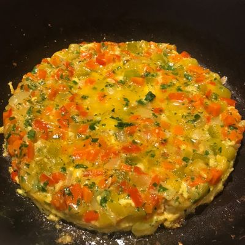

Ingredientes
- 3 huevos
- 1 taza de espinaca picada
- 1 zanahoria rallada
- 3 cucharadas de avena en copos
- 50 g de queso rallado o en cubos
- 1 cucharadita de aceite de oliva
- Sal, pimienta y nuez moscada a gusto
Paso a Paso
- Batir los 3 huevos en un bowl hondo junto con la sal, pimienta y nuez moscada.
- Incorporar la espinaca picada, la zanahoria rallada y la avena. Mezclar todo muy bien.
- Dejar reposar 5 minutos para que la avena se hidrate un poco.
- Calentar una sartén con el aceite de oliva a fuego medio.
- Verter la preparación en la sartén y agregar los cubos de queso por encima.
- Cocinar tapado a fuego bajo durante 5 a 7 minutos hasta que los bordes estén firmes.
- Dar vuelta con la ayuda de un plato o tapa y cocinar 3 minutos más del otro lado.
- Servir caliente.